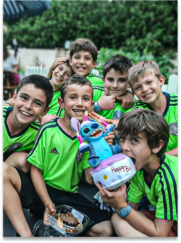
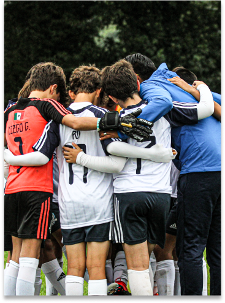
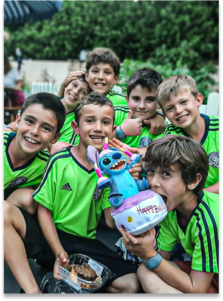
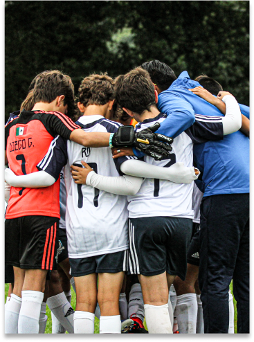

Conócenos
Iniciación al fútbol
Selecciones nacionales y Exalumnos
Selecciones nacionales y Exalumnos
Este programa intensivo, está diseñado para que los jugadores tomen gusto por este deporte, desarrollen coordinación motriz, además de conocer y practicar las habilidades básicas de esta disciplina deportiva para lograr competir en el ambiente agradable y seguro que ofrece Sisukas FC, libre de la presión de su equipo de colegio. Los candidatos y miembros deben tener entre 4 y 8 años de edad.
 Descarga aquí toda la información
Descarga aquí toda la información 


